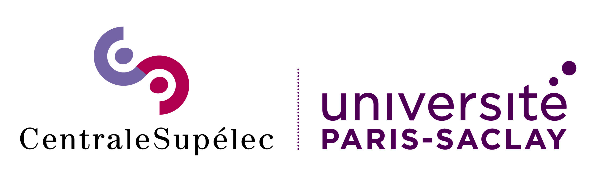

I'm a
ML | DL | NLP | LLMs | Big Data Analytics

About Me
Introduction
Data scientist and AI researcher passionate about creating innovative solutions with real-world impact. My expertise spans machine learning, deep learning, NLP, and large language models, with a focus on knowledge graphs and multimodal data. Skilled in Python, PyTorch, LangChain, and graph databases, I've developed data-driven applications across healthcare, e-commerce, and cybersecurity. My academic journey has taken me through five countries—completing my bachelor's in China and pursuing an Erasmus Mundus master's across Belgium, Spain, and France. This multicultural experience, supported by prestigious scholarships, has shaped my collaborative approach to problem-solving and given me fluency in multiple languages (English C1, Chinese B2, French A1). Outside work, I'm an avid cyclist (completed the 100km Chengdu Tianfu Greenway), tennis player, and traveler who has explored 9 countries with ambitions to see the world. Looking ahead, I'm seeking PhD opportunities or applied research roles in industry to continue pushing the boundaries of AI and data science.
Skills
AI, Machine Learning & Deep Learning
Programming Languages & Frameworks
Big Data & Cloud Platforms
Databases & Knowledge Graphs
Data Analytics & Visualization
Project Management
Education
Erasmus Mundus Masters in Big Data Management and Analytics (BDMA)
-
 Semester 1: Université libre de Bruxelles (ULB)Sept 2023 – Jan 2024 | Brussels, BelgiumMaster of Science in Computer Science and Engineering
Semester 1: Université libre de Bruxelles (ULB)Sept 2023 – Jan 2024 | Brussels, BelgiumMaster of Science in Computer Science and Engineering -
Semester 2: Universitat Politècnica de Catalunya (UPC)Feb 2024 – Jun 2024 | Barcelona, SpainMaster Erasmus Mundus in Big Data Management and Analytics
-

Semester 3 & 4: CentraleSupélec (CS), Université Paris-SaclaySept 2024 – Present | Paris, FranceMaster of Science in Engineering
Sichuan University
Experience
Laboratoire Images, Signaux et Systèmes Intelligents (LISSI)
AI Research Intern
- Building an LLM-assisted solution that extracts security and data-sharing requirements from multimodal inputs to automatically generate BPMN workflows enriched with semantically valid SecBPMN annotations and context-specific data sharing protection mechanisms.
- Technologies: Python, React-JS, LangChain, LLM, Retrieval-Augmented Generation, SecBPMN, Knowledge Graphs
Laboratoire Interdisciplinaire des Sciences du Numérique (LISN)
Graduate Research Assistant
- Project Title: "Enhancing Self-Supervised Learning for Image Clustering Using Geometric Deep Learning"
- Developed a novel deep clustering architecture that integrates Group Equivariant CNNs to enhance self-supervised learning for medical image analysis using the NIH chest X-ray datasets.
- Demonstrated that encoding geometric symmetries directly in the network architecture eliminates the need for explicit data augmentation while improving clustering performance and generalization.
- Built and optimized a scalable training pipeline using PyTorch's DistributedDataParallel and automatic mixed precision technologies, enabling efficient model training across multi-GPU systems.
- Technologies: PyTorch, OpenCV, LaTeX, HPC
Chengdu Suncape Data Co., Ltd
Software Engineer Intern
- Developed and optimized data pipelines using Apache Spark to process and analyze large data sets
- Improved data preprocessing workflows to support algorithm accuracy, achieving a 10% increase in predictive model performance
- Collaborated with cross-functional teams using Agile Scrum methodology to ensure best practices in code quality and version control
- Technologies: Python, PySpark, SciKit-Learn, Agile Scrum, Jira, Git
Projects
Explore some of my recent workDigiScan360
February 2024 – June 2024Big Data Analytics, ML, LLMs, Knowledge Graphs
Technologies:
PySpark, LLMs, SQL Server, Microsoft Fabric, Azure Data Factory, Power BI, GraphDB, SPARQL
Description:
- Collected and integrated data from e-commerce sites, expert reviews, and social media APIs to support actionable intelligence.
- Processed and transformed large-scale datasets using PySpark and Azure Data Factory, storing results in Azure Blob Storage.
- Utilized LLaMA-3 for sentiment analysis and insights extraction to uncover key trends and user sentiments.
- Constructed a knowledge graph in GraphDB and employed SPARQL queries for advanced analytical workflows.
- Designed a SQL Server star-schema data warehouse and developed Power BI dashboards for real-time, data-driven decision-making.
Anomaly Detection in Diesel Train Cooling Systems
September 2023 – December 2023Data Mining, ML, Anomaly Detection
Technologies:
Pandas, NumPy, Matplotlib, Seaborn, Scikit-Learn, Tableau, Streamlit
Description:
- Collaborated with the National Railway Company of Belgium (SNCB) on a data-driven anomaly detection system for diesel train cooling systems.
- Performed extensive data preprocessing and integrated external weather data from the OpenWeatherMap API to provide environmental context.
- Conducted exploratory data analysis (EDA) to identify temporal patterns impacting engine temperatures and pressures.
- Implemented K-means clustering and Isolation Forest algorithms in Scikit-Learn to distinguish genuine anomalies from sensor noise.
- Developed a real-time Tableau dashboard to visualize detected anomalies, empowering SNCB with actionable maintenance insights.
Brain Tumor Detection and Classification by Using CNN
September 2021 – December 2021Bachelor Thesis, DL, Data Augmentation, Medical Imaging
Technical Skills:
Python, TensorFlow, Keras, OpenCV, Latex
Description:
- Our CNN model achieved a validation accuracy surpassing traditional architectures like VGG-16 (94%), Xception (97%), ResNet-50 (94%), and Inception-V3 (96%).
- Utilized T1-weighted contrast-enhanced MRI images to classify tumors into meningioma, glioma, pituitary tumor, and no tumor categories.
- Enhanced detection accuracy through extensive data augmentation and optimization of CNN architectures.
AI-Based Disease Prediction System
March 2021 – June 2021Full-Stack Web App, ML, Healthcare
Technologies:
Python, React JS, Django, REST API, Scikit-Learn, TensorFlow, Keras
Description:
- Built a web-based symptom checker predicting over 40 diseases with machine learning algorithms.
- Integrated deep neural networks for skin and lung cancer detection via image uploads.
- Utilized SVM for heart disease risk assessment and deployed interactive dashboards for insights.
Achievements
Recognition and ScholarshipsErasmus Mundus Partner Country Scholarship
Awarded a fully-funded scholarship (one of the 24 selected awardees from more than 800 applicants), covering tuition, living expenses, and academic support for the Erasmus Mundus Joint Master Degree program.
The Belt and Road Initiative Scholarship
Received a comprehensive 4-year scholarship covering tuition, accommodation, and academic resources during undergraduate studies.
Get in touch
Do you have a project in your mind, contact me hereFind Me
Email: mdkamrul.islam@student-cs.fr
Tel: +33 652243655
Location: Paris, Ile de France, France